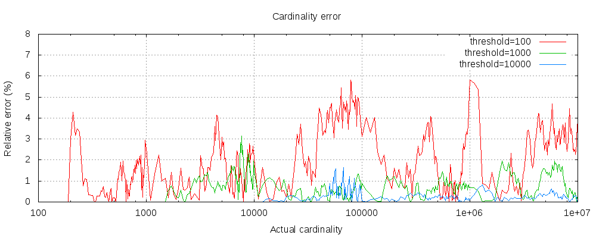

本地英文版地址: ../en/search-aggregations-metrics-cardinality-aggregation.html
计算不同值的近似计数的single-value(单值)指标聚合。
值可以从文档的给定的字段中提取，也可以由脚本生成。
假设你正在对商店的销售数据进行索引，并希望计算符合查询条件的已售出产品的唯一数量:
POST /sales/_search?size=0
{
"aggs" : {
"type_count" : {
"cardinality" : {
"field" : "type"
}
}
}
}
请求的响应：
{
...
"aggregations" : {
"type_count" : {
"value" : 3
}
}
}
此聚合还支持 precision_threshold 选项：
计算精确的计数需要将值加载到一个哈希集合中并返回其大小。 当处理高基数集合和(或)大值时，这是不可伸缩的，因为所需的内存使用量以及在节点之间传递每个分片的集合会占用太多的集群资源。
这种 cardinality 聚合基于 HyperLogLog++ 算法，该算法基于具有一些有趣属性的值的散列进行计数：
- 可配置的精度，决定如何用内存交换精度，
- 在低基数集合上有极好的准确性，
- 固定的内存使用量：无论是有数百个还是数十亿个唯一值，内存使用量仅取决于配置的精度。
对于精度阈值 c，我们实现它时大约需要 c * 8 个字节。
下图显示了阈值前后误差的变化情况：

对于所有的 3 个阈值来说，计数都精确到了配置的阈值。 虽然不能保证，但很可能是这样。 实际的准确性取决于所讨论的数据集。 总的来说，大多数数据集显示出一贯良好的准确性。 还要注意，即使阈值低至 100，即使在计算数百万个项目时，误差仍然很低(如上图所示，1-6%)。
HyperLogLog++ 算法依赖于散列值的前导零，散列在数据集中的确切分布会影响基数的准确性。
还请注意，即使阈值低至 100，误差仍然很低，即使在计算数百万个项目时。
对于具有高基数的 string 字段，将字段值的散列存储在索引中，然后对该字段运行 cardinality 聚合可能会更快。
这可以通过从客户端提供哈希值或使用mapper-murmur3 插件让 Elasticsearch 计算哈希值来实现。
预先计算散列通常只对非常大和(或)高基数的字段有用，因为它节省了CPU和内存。 但是，在 numeric 字段上，散列非常快，存储原始值所需的内存与存储散列所需的内存差不多。 对于低基数 string 字段也是如此，特别是考虑到这些字段已经过优化，以确保每个段的每个唯一值最多计算一次散列。
cardinality 指标支持脚本，但是性能会受到明显影响，因为散列需要动态计算。
POST /sales/_search?size=0
{
"aggs" : {
"type_promoted_count" : {
"cardinality" : {
"script": {
"lang": "painless",
"source": "doc['type'].value + ' ' + doc['promoted'].value"
}
}
}
}
}
这将把参数 script 解释为一个 inline(内联) 脚本，使用painless(无痛) 脚本语言，没有脚本参数。
要使用一个已存储的脚本，请使用以下语法：
POST /sales/_search?size=0
{
"aggs" : {
"type_promoted_count" : {
"cardinality" : {
"script" : {
"id": "my_script",
"params": {
"type_field": "type",
"promoted_field": "promoted"
}
}
}
}
}
}